Últimas publicaciones
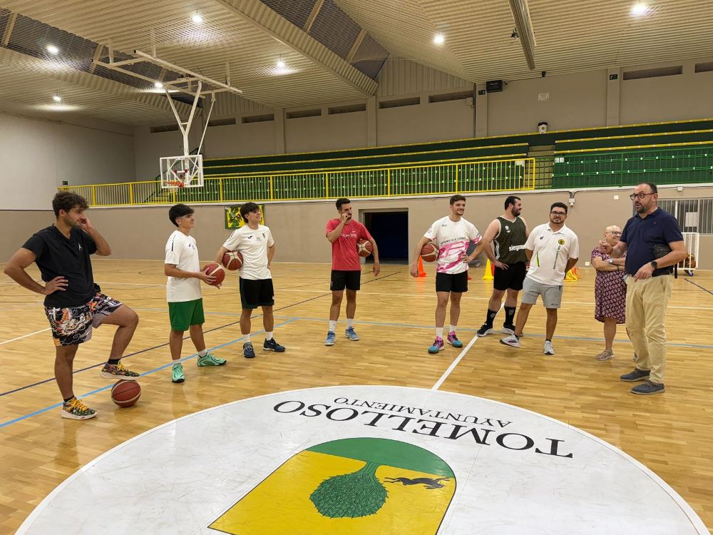
El Val Brokers CB Tomelloso arranca la pretemporada con los deberes hechos: ya hay calendario y el primer partido es en Hellín
El equipo comenzó los entrenamientos con la presencia de la directiva y ya conoce su calendario: debutará el 26 de septiembre en Hellín

Santi Lapaz ficha por el Val Brokers CB Tomelloso
El jugador vuelve al club, procedente del Club Baloncesto Socuéllamos, para afrontar su tercera etapa en Tomelloso

Alonso Cobo renueva con el Val Brokers CB Tomelloso
El base continúa en el proyecto local pese al interés de varios equipos de superior categoría, y será uno de los directores de juego del primer equipo
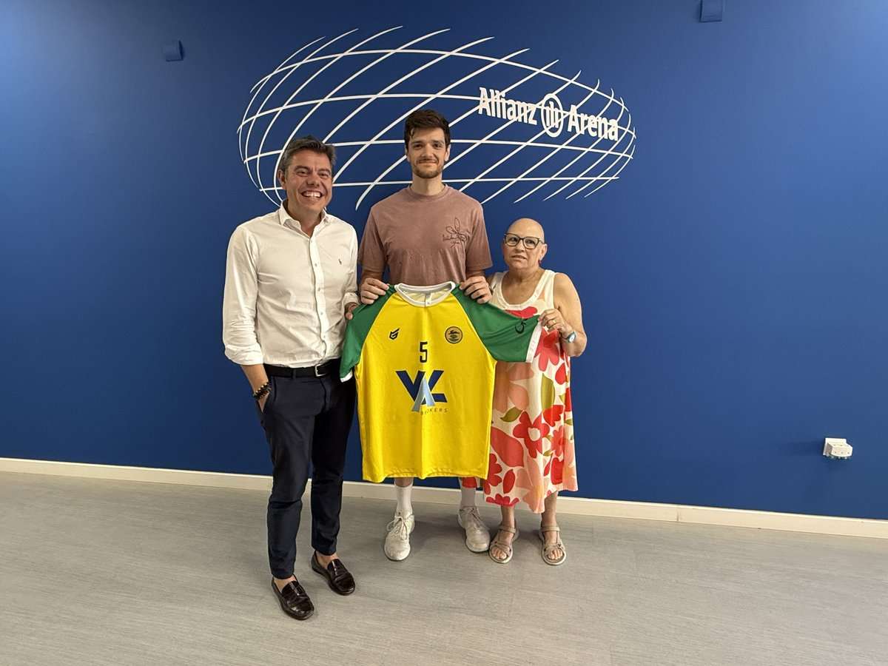
Miguel Ángel Lara renueva con el Val Brokers CB Tomelloso
Una de las principales referencias anotadoras del primer equipo continúa un año más, y seguirá compaginando la pista con el banquillo del U19 Verde

Loup González regresa a casa: ficha por el Val Brokers CB Tomelloso
El canterano vuelve al primer equipo tras varias temporadas alejado de las pistas, para competir en Primera Autonómica
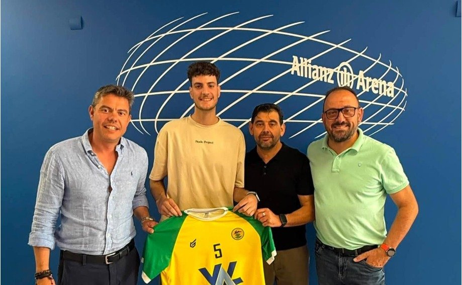
Adrián Ramírez renueva con el Val Brokers CB Tomelloso
El pívot afronta su segunda temporada en el club tras su fichaje el curso pasado procedente del C.B. Villarrobledo
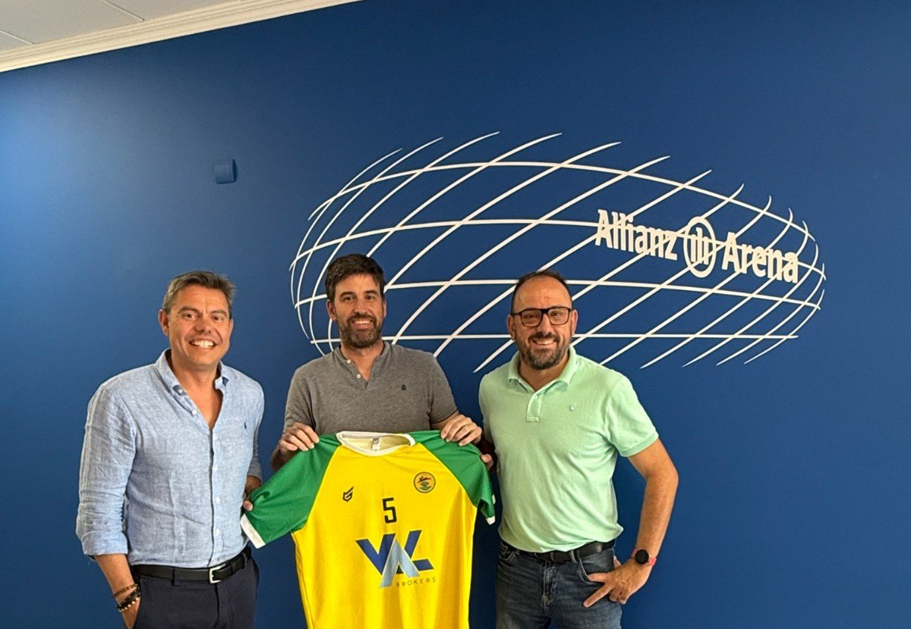
Rafa Román renueva con el Val Brokers CB Tomelloso
El interior seguirá una temporada más en el primer equipo, plenamente recuperado de la lesión que condicionó su curso pasado
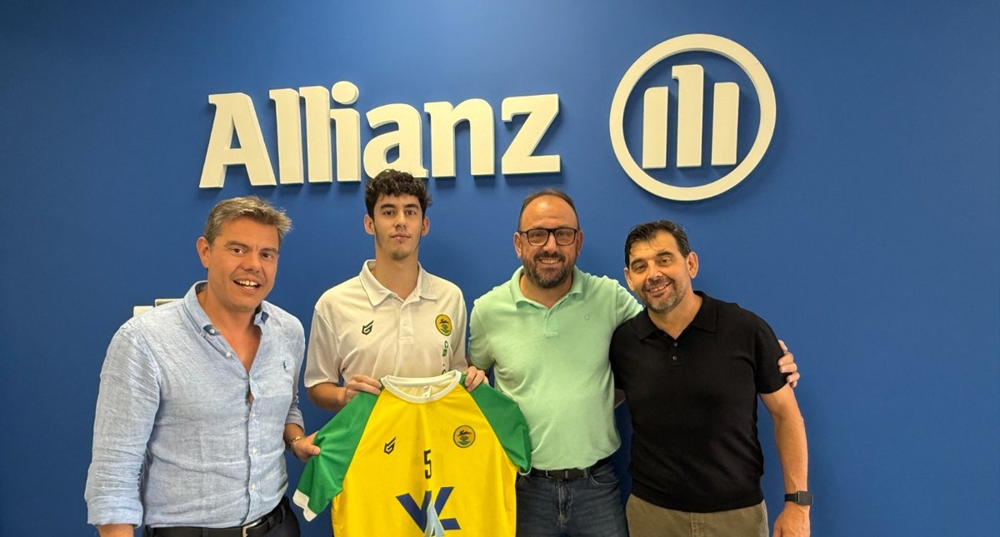
Javi Bonillo continúa en el Val Brokers CB Tomelloso
El menor de los hermanos Bonillo renueva su compromiso con el club para la próxima temporada
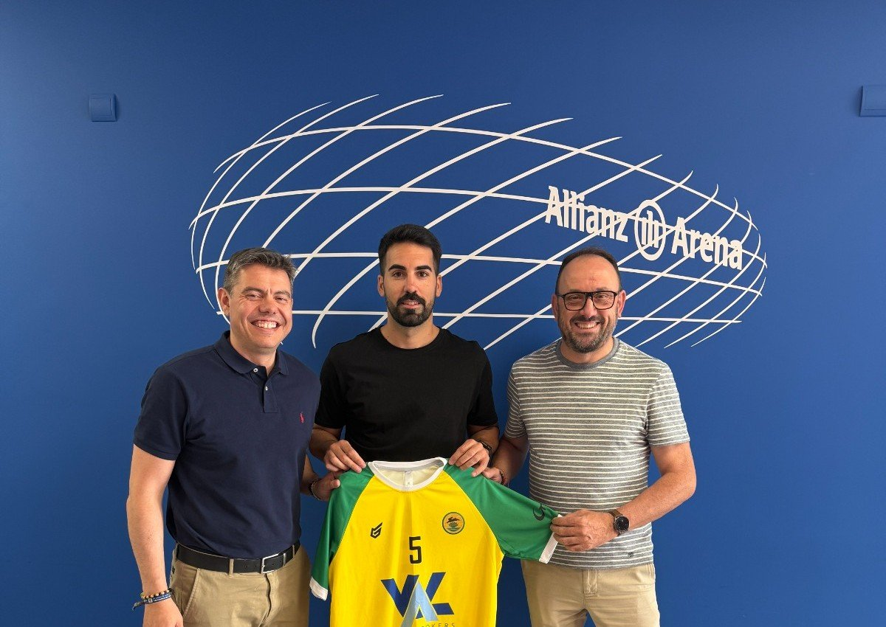
Mario Melero ficha por el Val Brokers CB Tomelloso
El escolta, procedente del Club Baloncesto Villarrobledo, se une al primer equipo tras una destacada trayectoria en Primera Nacional, Liga EBA y Tercera FEB
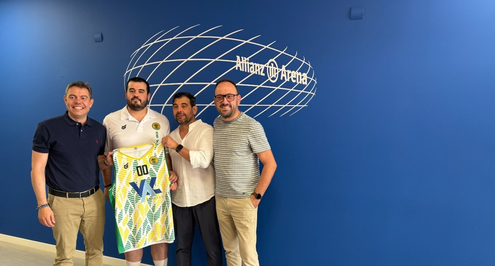
Daniel Bonillo, capitán, renueva con el Val Brokers CB Tomelloso
El pívot seguirá una temporada más al frente del vestuario tomellosero
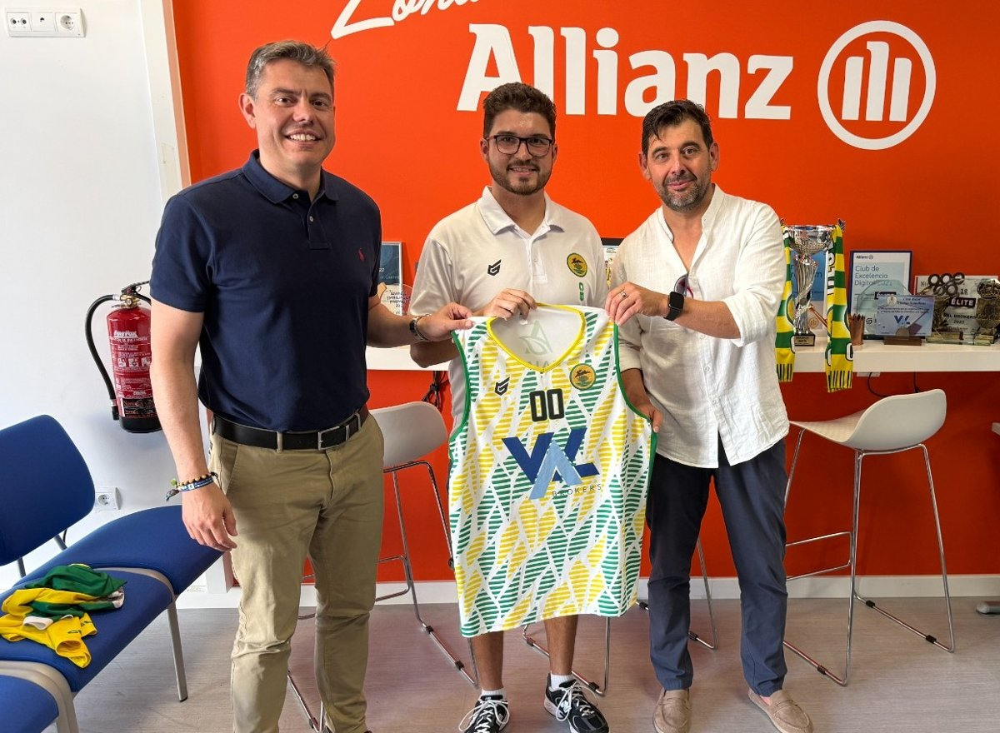
Aarón Núñez renueva como entrenador del Val Brokers CB Tomelloso
El técnico tinerfeño continuará como director-coordinador de cantera y entrenador del primer equipo
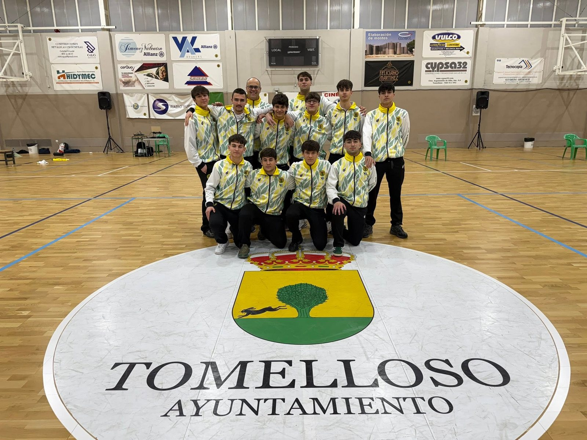
El Val Brokers CB Tomelloso Amarillo cierra la liga con autoridad ante el CB Daimiel, 77-53
Victoria 77-53 vs. CB Daimiel
Los de Ramón Cañas se despiden de la temporada con una victoria contundente en el San Antonio en la que Lucas Sánchez lideró el ataque con 20 puntos
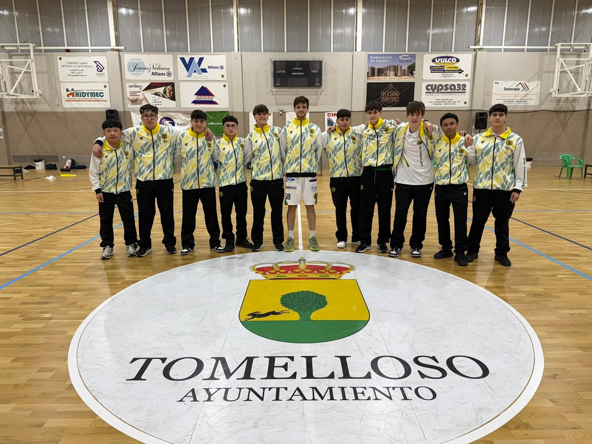
El Val Brokers CB Tomelloso Verde cierra una temporada de aprendizaje con derrota ante Cervantes Ciudad Real Negro, 49-71
Derrota 49-71 vs. Basket Cervantes Ciudad Real Negro
Los verdes, formados por cadetes y júniors de primer año, despiden la Liga U19 con la cabeza alta tras una temporada de notable progresión
El Val Brokers CB Tomelloso Amarillo arrasa en Argamasilla en un derbi comarcal para el recuerdo, 36-77
Victoria 36-77 vs. Ciudad Real Fibra CB Argamasilla
Los amarillos ganaron con autoridad fuera de casa y cerraron el partido con un último cuarto de 0-25, en una jornada marcada por el susto inicial con Raúl Ruiz
El CB Almagro supera con claridad al Val Brokers CB Tomelloso Verde en el San Antonio, 60-109
Derrota 60-109 vs. CB Almagro
Los verdes no pudieron frenar a un rival de mayor envergadura, aunque Adrián Garrido destacó con 24 puntos en una tarde de entrega total
El Val Brokers CB Tomelloso Amarillo da la campanada ante el líder BKP Buda Tattoo, 80-48
Victoria 80-48 vs. BKP Buda Tattoo
Los amarillos firmaron su mejor partido de la temporada con una exhibición colectiva ante el primer clasificado que dejó sin respuesta a un rival imbatido hasta la fecha
El CB Miguelturra supera ampliamente al Val Brokers CB Tomelloso Verde en una tarde de dura lección, 120-27
Derrota 120-27 vs. CB Miguelturra
Los verdes compitieron con carácter en la segunda mitad ante uno de los equipos más fuertes de la categoría
El Val Brokers CB Tomelloso Verde roza la sorpresa ante el cuarto clasificado BV Crea Tu Sabor, 58-63
Derrota 58-63 vs. BV Crea Tu Sabor
Una remontada épica en el último cuarto, liderada por un soberbio Víctor Calzada con 32 puntos, estuvo a punto de dar uno de los resultados más sorprendentes de la temporada
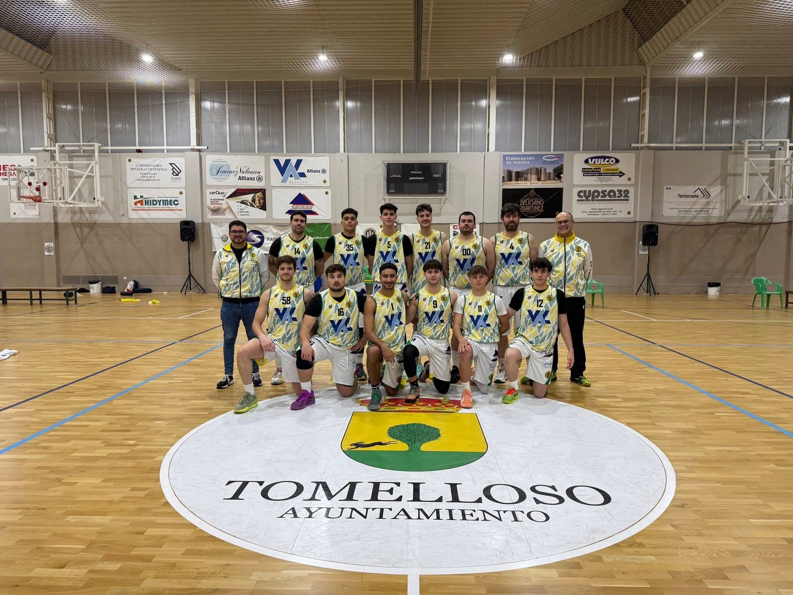
El Val Brokers CB Tomelloso dice adiós a la temporada en Bolaños
Derrota 76-71 vs. C.B. Bolaños - García Hermanos
Los de Aarón Núñez caen 76-71 en el segundo partido del playoff y ceden la eliminatoria (2-0) ante el Bolaños - García Hermanos, que jugará los cuartos de final
El Prado-Marianistas se impone al Val Brokers CB Tomelloso Amarillo en un partido que se decidió en la segunda mitad, 72-50
Derrota 72-50 vs. Prado-Marianistas
Los amarillos firmaron una primera parte de gran nivel pero no supieron mantener la concentración tras el descanso y pagaron caro el desequilibrio emocional
El Club Baloncesto Manzanares supera con claridad al Val Brokers CB Tomelloso Amarillo en el San José, 53-93
Derrota 53-93 vs. Club Baloncesto Manzanares
Un primer cuarto catastrófico dejó el partido visto para sentencia ante el segundo clasificado, aunque el equipo reaccionó en los treinta minutos siguientes
El Val Brokers CB Tomelloso Verde compite de tú a tú ante el Basket Cervantes Ciudad Real pero cae en un partido igualado, 74-60
Derrota 74-60 vs. Basket Cervantes Ciudad Real
Los verdes plantaron cara durante los cuarenta minutos en Ciudad Real con Víctor Calzada como referencia ofensiva con 23 puntos
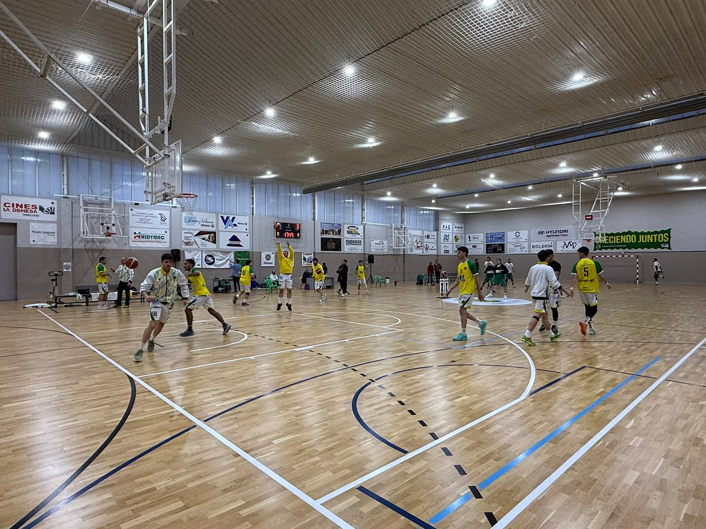
El Val Brokers CB Tomelloso cae con la mínima en el estreno del playoff ante el Bolaños
Derrota 71-73 vs. C.B. Bolaños - García Hermanos
Los de Aarón Núñez pierden 71-73 en el pabellón San Antonio en el primer partido de la eliminatoria al mejor de tres por el acceso a los cuartos de final
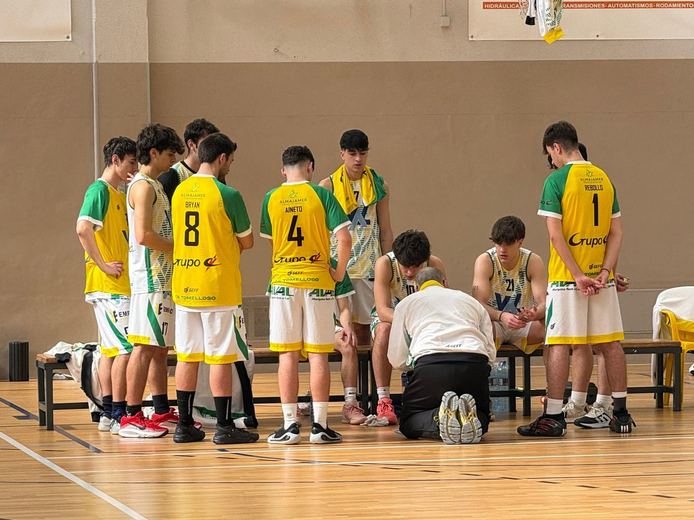
El Val Brokers CB Tomelloso Amarillo impone su ley con intensidad y ritmo ante el Cervantes Ciudad Real Negro, 78-45
Victoria 78-45 vs. Basket Cervantes Ciudad Real Negro
Los amarillos dominaron los cuarenta minutos con una defensa asfixiante y repartieron la anotación entre toda la rotación en una victoria convincente en el San Antonio
El Val Brokers CB Tomelloso Verde aguanta el tipo en Manzanares pese a caer ante el segundo clasificado, 78-44
Derrota 78-44 vs. Club Baloncesto Manzanares
Los verdes encajaron un primer cuarto muy duro pero compitieron con solidez durante los treinta minutos siguientes ante uno de los equipos más fuertes de la categoría
El CB Almagro supera al Val Brokers CB Tomelloso Amarillo en una tarde marcada por las bajas de Raúl Ruiz y Marcial Martínez, 63-43
Derrota 63-43 vs. CB Almagro
Los amarillos acusaron la ausencia de dos de sus piezas clave y no pudieron competir en el tramo central del partido ante un rival que aprovechó sus mejores condiciones
El CB Daimiel se impone al Val Brokers CB Tomelloso Verde en un partido que se escapó en el segundo cuarto, 55-73
Derrota 55-73 vs. CB Daimiel
Los verdes compitieron de tú a tú en el primer periodo pero encajaron un parcial decisivo tras el descanso que dejó el partido cuesta arriba
El Val Brokers CB Tomelloso se estrena con Aarón Núñez y firma un triunfo de prestigio en Manzanares (64-67)
Victoria 64-67 vs. Club Baloncesto Manzanares
Con bajas por lesión y el debut de Rafael Román junto a su hijo Jorge en la convocatoria, los tomelloseros cierran la primera fase de la Liga STM 1ª Autonómica doblegando al segundo clasificado
El CB Miguelturra exhibe su mejor baloncesto y supera con claridad al Val Brokers CB Tomelloso Amarillo en el San José, 51-89
Derrota 51-89 vs. CB Miguelturra
Los visitantes dominaron de principio a fin con una actuación de alto nivel que no dejó opción al conjunto de Ramón Cañas
El Val Brokers CB Tomelloso Verde roza su primera victoria de la temporada pero Argamasilla se la arrebata en el último cuarto, 49-44
Derrota 49-44 vs. Ciudad Real Fibra CB Argamasilla
Los verdes ganaron el primer periodo, llegaron al descanso por delante y empataron al término del tercero, pero no pudieron sostener la ventaja en los minutos finales
Al Val Brokers CB Tomelloso se le escapa el partido en el último cuarto ante el ADB Hellín (60-69)
Derrota 60-69 vs. ADB Hellín
Los tomelloseros mandaban en el marcador al entrar en los últimos diez minutos, pero un parcial en contra de 10-22 decidió el encuentro, disputado con Ramón Cañas al frente del banquillo tras la marcha de Carlos Pasión López
El Val Brokers CB Tomelloso Amarillo se atenaza en La Molineta y deja escapar una victoria que tenía al alcance, 50-43
Derrota 50-43 vs. BV Crea Tu Sabor
Los amarillos llegaron al último cuarto con el partido igualado pero no supieron sostener la presión en los minutos decisivos, y la noche se complicó con la lesión de Marcial Martínez
El Val Brokers CB Tomelloso se desangra en el último cuarto y se despide de la Copa en Torrijos
Derrota 83-62 vs. CB Torrijos
Los tomelloseros dominaban por ocho puntos al descanso, pero un parcial de 27-5 del CB Torrijos en los últimos diez minutos decidió la semifinal (83-62)
El BKP Buda Tattoo supera al Val Brokers CB Tomelloso Verde con claridad en el San Antonio, 37-84
Derrota 37-84 vs. BKP Buda Tattoo
El líder imbatido de la categoría fue muy superior aunque los verdes compitieron con actitud durante los cuarenta minutos con Víctor Calzada y Adrián Garrido como referencias
El Val Brokers CB Tomelloso Amarillo remonta y se lleva un partido vibrante ante el Basket Cervantes Ciudad Real, 78-71
Victoria 78-71 vs. Basket Cervantes Ciudad Real
Los amarillos firmaron un tercer cuarto descomunal de 33-15 para dar la vuelta a un marcador que les era adverso al descanso, y aguantaron el apretón final del rival
El Prado-Marianistas supera con claridad al Val Brokers CB Tomelloso Verde en Ciudad Real, 98-49
Derrota 98-49 vs. Prado-Marianistas
Víctor Calzada Jiménez firmó una actuación sobresaliente con 28 puntos en cuarenta minutos ante uno de los equipos más fuertes de la categoría
El Val Brokers CB Tomelloso resiste el susto y suma en Mota del Cuervo (68-74)
Victoria 68-74 vs. C.B. Mota Max Infraestructuras
Los tomelloseros abren una renta de doce puntos al descanso, aguantan el empuje de un Jesús Almodóvar Garrido estelar y se llevan la duodécima jornada de la Liga STM 1ª Autonómica
El Val Brokers CB Tomelloso se impone con autoridad al CBB Miguel Esteban (93-73)
Victoria 93-73 vs. CBB Miguel Esteban
Un Miguel Ángel Lara Sánchez inspirado, con 28 puntos y 5 triples, lidera el triunfo en el pabellón San Antonio en la undécima jornada de la Liga STM 1ª Autonómica
El Val Brokers CB Tomelloso Amarillo se impone con autoridad al Verde en el derbi interno del club, 20-89
Victoria 20-89 vs. Val Brokers CB Tomelloso Verde
Los más pequeños acusaron el respeto ante sus compañeros mayores y no llegaron a competir en un partido que quedó sentenciado desde el primer cuarto
El Val Brokers CB Tomelloso saca adelante un partido de infarto en Ciudad Real (63-65)
Victoria 63-65 vs. Sasegur Cervantes Ciudad Real
Los tomelloseros, con Adrián Ramírez Martínez de vuelta al quinteto inicial, resisten en el tramo final ante el Sasegur Cervantes Ciudad Real en la décima jornada de la Liga STM 1ª Autonómica
El Val Brokers CB Tomelloso sufre una abultada derrota en Bolaños (93-60)
Derrota 93-60 vs. C.B. Bolaños - García Hermanos
Los locales fueron muy superiores de principio a fin en la novena jornada de la Liga STM 1ª Autonómica, en un partido en el que los tomelloseros no pudieron contar con Adrián Ramírez Martínez
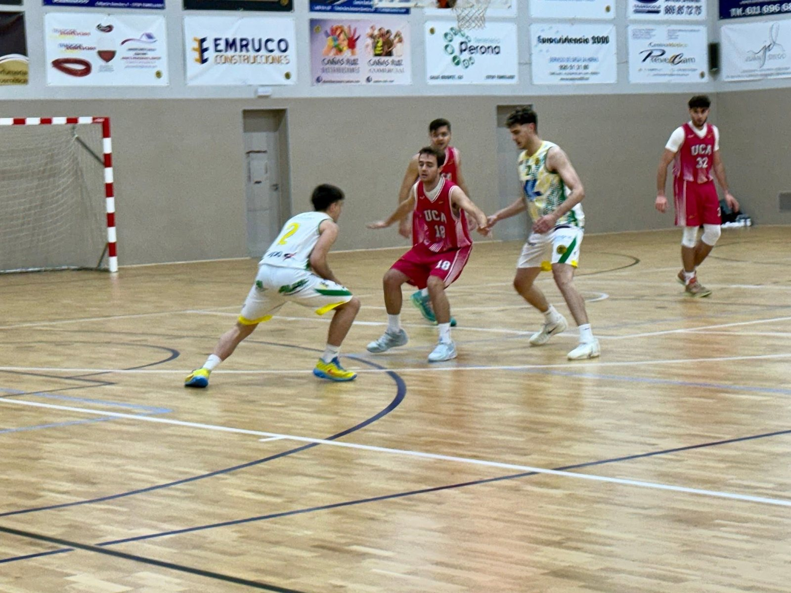
El Val Brokers CB Tomelloso se queda a las puertas de tumbar al líder CB UCA Albacete
Derrota 73-75 vs. CB UCA Albacete
Los locales remontan doce puntos en la segunda mitad pero caen 73-75 en el pabellón San Antonio ante el primer clasificado de la Liga STM 1ª Autonómica